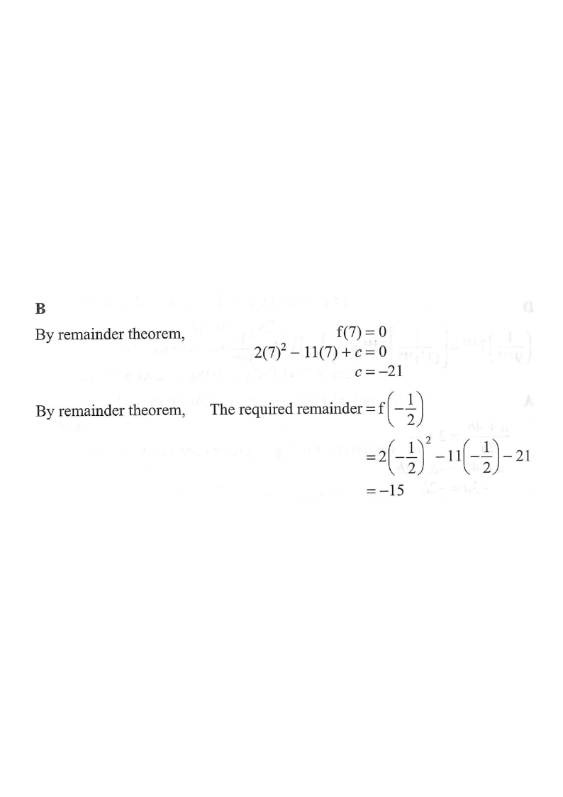

[2017MC#7] · 4. Polynomials
Let $p(x)=2x^{2}-11x+c$, where $c$ is a constant.
If $p(x)$ is divisible by $x-7$, find the remainder when $p(x)$ is divided by $2x+1$.
A. $-26$
B. $-15$
C. $15$
D. $26$

Figure (original exam diagram)
1 Use the Remainder Theorem: $p(7)=0$
Factor Theorem
\((x-a) \text{ is a factor of } p(x) \iff p(a)=0\)
Divisible by \(x-7\) means the remainder \(p(7)\) equals \(0\).
"Divisible by $x-7$" means the remainder on division by $x-7$ is $0$. By the
Remainder Theorem , the remainder is $p(7)$. So
$$p(7)=0.$$
Key idea: divisor $x-7$ → substitute $x=7$.
2 Find the constant $c$
Substitute $x=7$ into $p(x)=2x^{2}-11x+c$:
$$2(7)^{2}-11(7)+c=0$$
$$98-77+c=0$$
$$21+c=0 \quad\Longrightarrow\quad c=-21.$$
So $p(x)=2x^{2}-11x-21$.
Only one unknown $c$ — one equation is enough.
3 Divide by $2x+1$: find $x$ such that $2x+1=0$
Remainder Theorem for a Linear Divisor
\(ax+b=0 \Rightarrow x=-\dfrac{b}{a}\)
For the divisor \(2x+1\) we evaluate \(p\) at \(x=-\tfrac{1}{2}\).
The remainder when $p(x)$ is divided by $2x+1$ equals $p\!\left(-\tfrac12\right)$.
$$2x+1=0 \quad\Longrightarrow\quad x=-\tfrac12.$$
For a linear divisor $ax+b$, use $x=-\frac{b}{a}$.
4 Evaluate the remainder
Remainder Theorem
\(\text{remainder of } p(x)\div(x-a) \text{ is } p(a)\)
So the required remainder is \(p(-\tfrac12)=\tfrac12+\tfrac{11}{2}-21=-15\).
$$\text{Remainder}=p\!\left(-\tfrac12\right)
=2\left(-\tfrac12\right)^{2}-11\left(-\tfrac12\right)-21$$
$$=2\cdot\tfrac14+\tfrac{11}{2}-21
=\tfrac12+\tfrac{11}{2}-21
=6-21=-15.$$
The required remainder is $-15$ .
Watch the signs: $-11\times(-\tfrac12)=+\tfrac{11}{2}$.
Answer: B · $-15$
PRACTICE Similar question — try it yourself
Question. Let \(p(x)=2x^{2}+kx-15\), where \(k\) is a constant. It is given that \(p(x)\) is divisible by \(x-3\).
Show the worked solution
Step 1. (a) By the factor theorem, \(p(3)=0\): \(2(9)+3k-15=0\), so \(3+3k=0\) and \(k=-1\).
Step 2. Hence \(p(x)=2x^{2}-x-15\).
Step 3. (b) Put \(2x+3=0\), i.e. \(x=-\tfrac{3}{2}\).
Step 4. Remainder \(=p\left(-\tfrac{3}{2}\right)=2\left(\tfrac{9}{4}\right)-\left(-\tfrac{3}{2}\right)-15=\tfrac{9}{2}+\tfrac{3}{2}-15\).
Step 5. \(=6-15=-9\).
Answer: (a) \(k=-1\); (b) \(-9\)